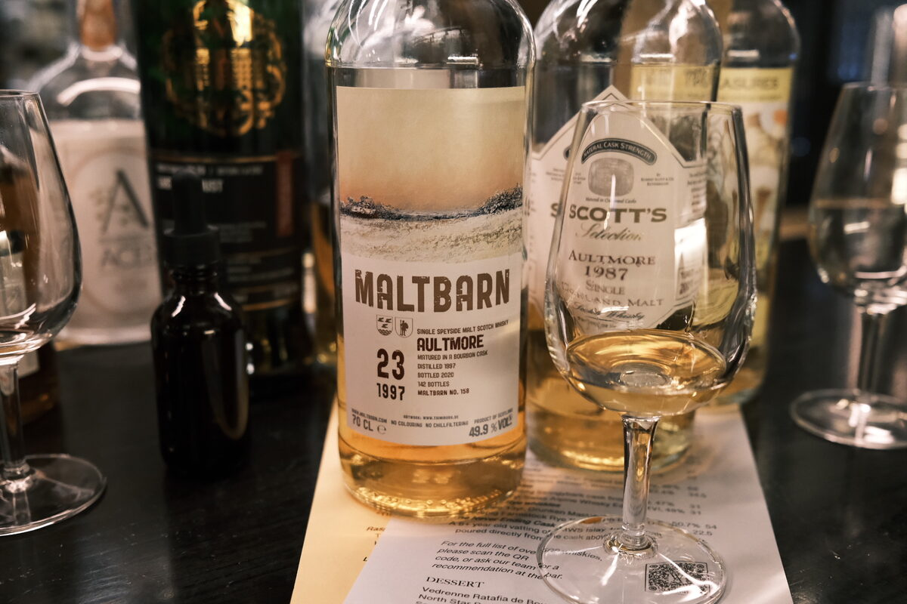

Aultmore 1997 Maltbarn 23 years 49.9% (bourbon cask)
Flight Maltbarn 158. Destination: Aultmore. Sit back, relax, and our in-flight service will begin shortly…
Colour Gold.
Nose Coconut, caramel, Coco Lopez… tropical! Isle of Aultmore, five star hotel, all expenses paid… sorry. Thick and creamy. A bit leafy, grassy. Mangoes and bananas. Malty! Salted caramel.
Palate Thick and oily. Quite spicy… nutmeg, cinnamon. Oak. Banana sundae, mango, pineapple… desiccated coconut… tropical paradise. Sweet and malty. A hint of cola? With water, a little grass. Orange acidity, citrus oils.
Finish So warm. Creamy, jam and scones. White chocolate and some lightly roasted almonds. Very long, malty. With water, creamier.
Comments Upon landing, local time will be 4PM. Temperature: a lovely 30 degrees Celsius. Slap on some sunscreen. Blue skies… flamingos… 87/100.

Posted by Dominic on 14 Jun 2021